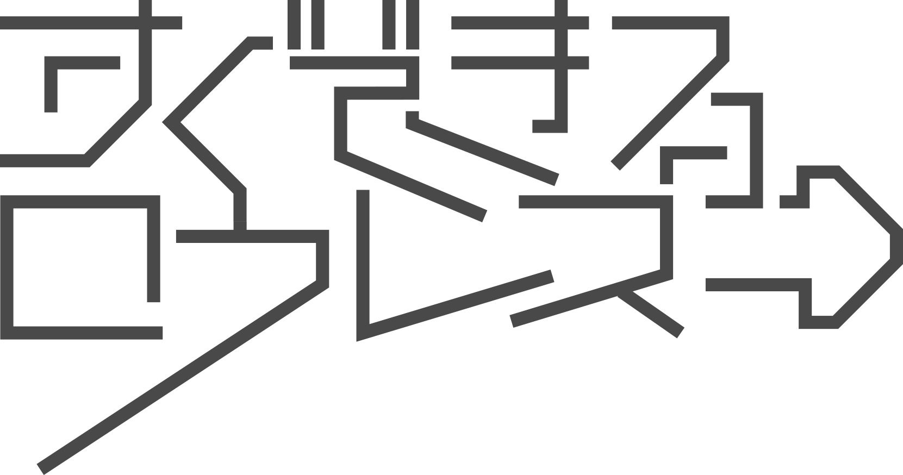

MAGAZINE
低解像度になる◻︎◻︎◻︎
2025.12.29
解像度を下げることができる、おすすめWebサイト3選
すぐできるロウレス #2
解像度って何？
「解像度が高い＝良いこと」だと思っていませんか？ 解像度とは、画像の密度のこと。数値が高いほど細部までくっきりと見えますが、その分、脳が処理しなければならない情報量も膨大になります。 あえて解像度を下げることは、情報の「引き算」です。視覚的なノイズを削ぎ落とし、本質的なシルエットや空気感だけを楽しむこともできます。
おすすめWebサイト
画像を簡単に「低解像度化」したり、味わい深い「ノイズ」を加えたりできる無料サイトを3つご紹介します。
画像のリサイズ「iLoveIMG」
一番シンプルな方法です。あえてサイズを小さく（例：横幅100pxなど）リサイズして保存し、それを再度大きく表示させることで、デジタル特有の「ピクセル感」を楽しむことができます。
ピクセル化エフェクト「Pixelied」
オンラインのエディターで、写真に「Pixelate（ピクセル化）」エフェクトをかけられます。モザイクの粗さを調整して、自分にとって心地よい「曖昧さ」を探してみましょう。
ノイズ付加「VanceAI」
本来は画質を上げるサイトですが、エフェクト設定で「フィルム粒子」や「ノイズ」を加えることができます。綺麗すぎる写真に「ザラつき」を加えるだけで、温かみのあるロウレスな画像に仕上がります。
Webサイト以外では？
PC作業中も同様の設定が可能です。 専用のサイトを使わなくても、日常で「ロウレス」は作れます。 例えば、スマホのカメラで「わざとピントを外して撮る」こと。あるいは、「スクショした画像を何度も拡大・保存を繰り返す」こと。 デジタル的な劣化をあえて楽しむのも一つの方法です。
すぐできるロウレスとは？
低解像度の日が提供する日常を少し低解像度にして肯定できるようになる情報を発信する企画です。他にも日常を変化させる記事を公開しています。

PICKUP
おすすめ記事